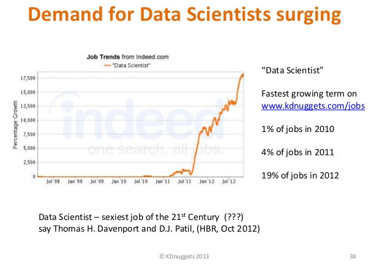
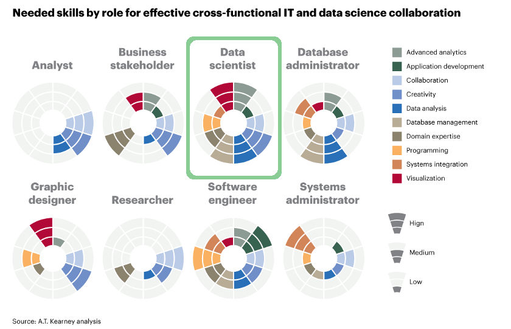

¿Qué es la Ciencia de Datos?
De inicio, debemos partir de que la Ciencia se define como un conjunto ordenado de conocimientos estructurados sistemáticamente. Y que este conocimiento se obtiene mediante el método científico, cuyos pasos básicos son la observación, hipótesis, experimentación y teoría. El término de “Ciencia de Datos” no es por sí sola una de las grandes ciencias (como matemáticas o biología); dicho de una manera fría, se pretende abarcar a un conjunto de herramientas (basadas en la ciencia) y habilidades (humanas e informáticas) con un nombre muy atractivo.
La Ciencia de Datos (Data Science) es la extracción de conocimiento a partir de grandes volúmenes de información estructurada o no estructurada. Es el proceso que sigue a la “Minería de Datos” (que es la recolección y ordenación de los datos).

¿Qué es un Científico de Datos?
Un Científico de Datos (Data Scientists) es una persona con habilidades estadísticas, computacionales (que sabe programar) y de visualización de datos que lo llevan a encontrar los patrones que le servirán a la empresa o institución para “capitalizar” la información recogida.
En el presente deben de haber miles de científicos de datos trabajando tanto en “start-ups” como en grandes corporaciones. Su recién reconocimiento viene por el hecho de que ahora las empresas tienen que lidiar con mayores volúmenes de información y en un mayor número de formas. Simplemente, si tu empresa resguarda varios petabytes de datos, si la información crucial está en filas y columnas de una hoja de cálculo o si las grandes decisiones dependen del resultado de muchos análisis, tienes o necesitas un científico de datos.
Tal vez, la mejor forma de imaginarnos lo que es capaz de hacer un científico de datos, es la de hacer descubrimientos al “nadar en un mar” de información. En su quehacer deberá tener la capacidad de trabajar con grandes cantidades de información, de estructurarlos, de fusionarlos con otros datos provenientes de muchas fuentes, limpiarlos y sintetizarlos. De su trabajo depende que se tome la decisión correcta para un producto, proceso o servicio.

¿Qué se necesita saber para ser un científico de datos?
Como se ha de imaginar, especializarse en este trabajo requiere no sólo de conocimientos, también del desarrollo de habilidades especiales que van madurando con el ejercicio contínuo:
- Domine las matemáticas, la estadística y la informática. En particular, de la última, no basta ser un simple usuario, sino un creador de herramientas digitales.
- Aprenda a programar. De preferencia use varios lenguajes de programación, como inicio se recomienda Python.
- Conozca las Bases de Datos. Sepa cómo usar los comandos SQL para consultar, modificar y alimentar datos. Si conoce a profundidad un software libre como PostgreSQL o MySQL mucho mejor.
- Sea ágil en herramientas de procesamiento y visualización. El software R es el más utilizado para cuestiones de análisis. También es valioso que se puede sacar provecho de programas de hojas de cálculo, como Microsoft Excel o Libre Office en este ámbito.
- De el salto al “Big Data”. Cuando la cantidad de datos sobrepase los límites de las hojas de cálculo y las bases de datos, es momento de brincar a los servidores y datos “en la nube”. El análisis de redes sociales, datos climáticos, genética y vastas series históricas lo pueden requerir.
- No deje de aprender y practicar. Contacte a camaradas con el mismo interés o intégrese a una comunidad. Lea, estudie y practique lo que aquí se ha mencionado y más; no hay límite en lo que deba de saber.
- Colabore con la asociaciones, gobierno o con la iniciativa privada. Muchos de éstos publican en sus respectivos sitios web al alcance de todos su información; con la noble esperanza de que sean útiles y en espera de que al haber retroalimentación les ayuden a mejorar. También puede apadrinar o crear un proyecto que nazca de mucha información.

Esto continuará... y no se detendrá
Vivimos en la era dorada de la información, donde para nuestra fortuna, aún hay muchos retos que resolver. Y es en este ramo (mientras no construyan una computadora capaz de resolverlo todo) donde encontraremos grandes cantidades de problemáticas a solucionar.
En una próxima entrega, se listarán datos abiertos que se pueden descargar y practicar con éstos.
Referencias
- Wikipedia: Data Science tiene la definición de "Ciencia de Datos". Sin traducción al español cuando se escribió este análisis.
- Data Scientist: The Sexiest Job of the 21st Century por Thomas H. Davenport y D.J. Patil.
- NYC Data Science Academy ofrece cursos y "campamentos de verano" para ser Científico de Datos.
- Data Science Workflow: Overview and Challenges por Philip J. Guo publica una tesis descargable como archivo PDF de 230 páginas al respecto.